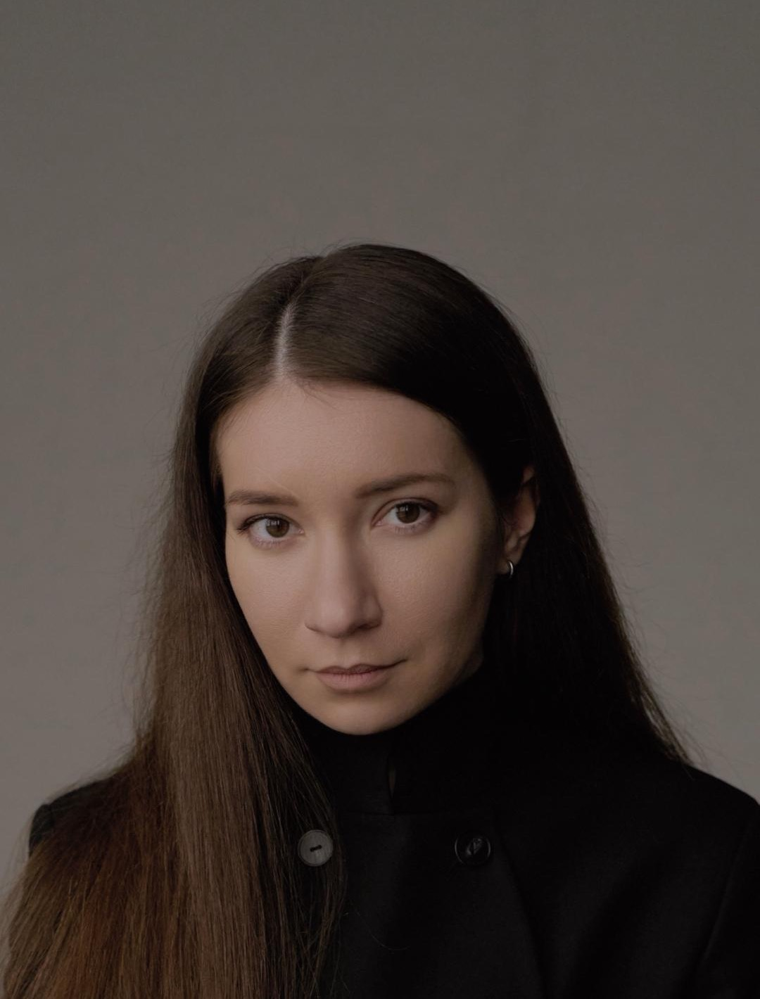
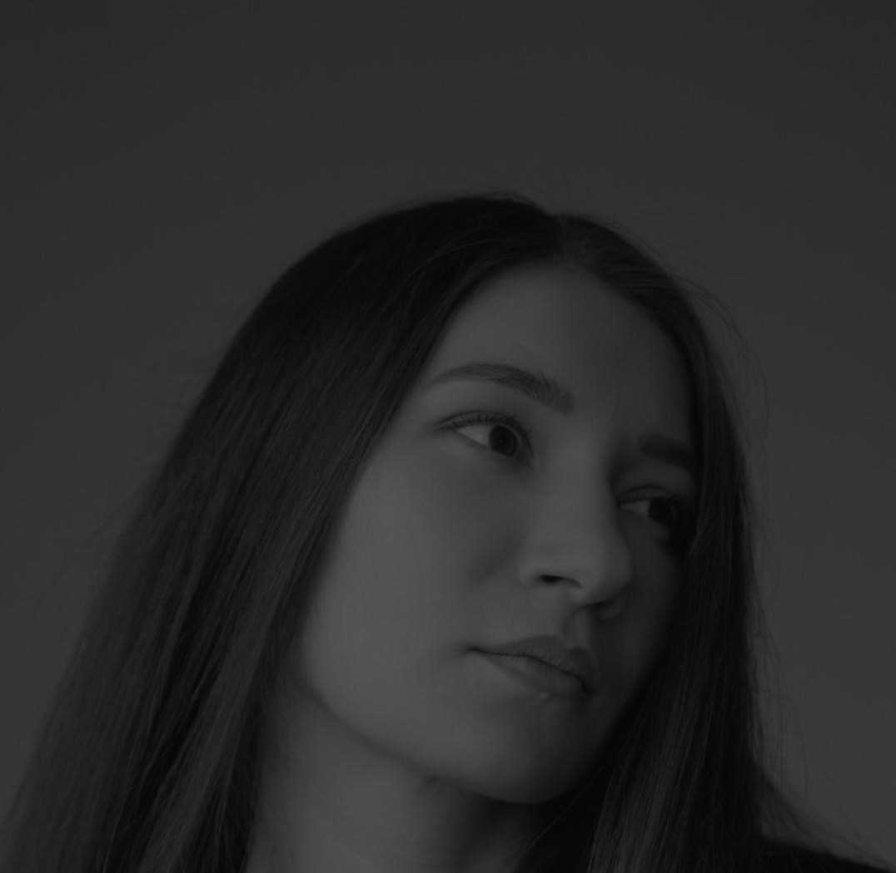

Яна Рожкова
Аналитический психологЮнгианский анализ
Моя задача — стать проводником на пути вашего самопознания и знакомства с собой.
- Закончила психфак МГУ
- Ранее училась в Чехии
- Очно и онлайн
«Мы не то, что с нами случилось, мы — то, кем мы решили стать»
01
Запросы, с которыми я работаю
- Тревога
- Перфекционизм
- Прокрастинация
- Непонимание «Кто я»
- Потеря смысла жизни
- Сложности с самооценкой
- Поиск себя и самореализация
- Постоянное чувство тоски и грусти
- Трудности в общении
- Сепарация от родителей
- Выстраивание личных границ
- Высокие требования к себе и другим
- Созависимые отношения
- Постоянное одиночество
- Проживание горя и утраты
- Частые разрывы отношений
- Сложности в построении отношений

02
Условия и формат работы
- 50 минут
- Длительность сессии
- Онлайн
- Teams / Zoom
- Очно
- г. Москва, м. Пушкинская
Нахожусь более 7 лет (450+ часов) в личном непрерывном анализе в Юнгианском подходе.
Я регулярно прохожу супервизии, что обеспечивает экологичность и безопасность моей работы.
Записаться на консультацию
или узнать подробности